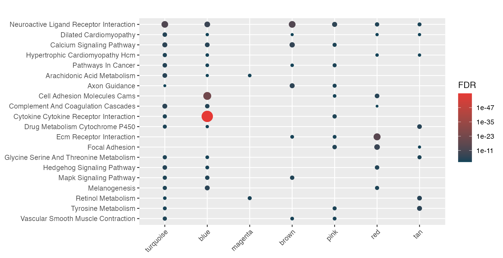

Often computational biologists must process, interpret, and share large amounts of biological data. A common example is interpreting gene co-expression modules across one or more phenotype, resulting in potentially hundreds of signatures to annotate. Here we have signatures of gene co-expression modules, generated with WGCNA, for two distinct phenotypes. In this case, we can feed hypeR() a named list of signatures and a multihyp object will be returned. This object is essentially just multiple hyp objects. However it is recognized and handled differently by downstream methods.
data(wgcna)
We start by annotating signatures for the first phenotype..
signatures <- wgcna[[1]] str(signatures)
List of 21
$ turquoise : chr [1:1902] "CLEC3A" "KCNJ3" "SCGB2A2" "SERPINA6" ...
$ blue : chr [1:1525] "GSTM1" "BMPR1B" "BMPR1B-DT" "PYDC1" ...
$ magenta : chr [1:319] "DSCAM-AS1" "VSTM2A" "UGT2B11" "CYP4Z1" ...
$ brown : chr [1:1944] "SLC25A24P1" "CPB1" "GRIA2" "CST9" ...
$ pink : chr [1:578] "MUC6" "GLRA3" "OPRPN" "ARHGAP36" ...
$ red : chr [1:681] "KCNC2" "SLC5A8" "HNRNPA1P57" "CBLN2" ...
$ darkred : chr [1:43] "OR4K12P" "GRAMD4P7" "FAR2P3" "CXADRP3" ...
$ tan : chr [1:161] "LEP" "SIK1" "TRARG1" "CIDEC" ...
$ lightcyan : chr [1:82] "CDC20B" "FOXJ1" "CDHR4" "MCIDAS" ...
$ purple : chr [1:308] "C10orf82" "GUSBP3" "IGLV10-54" "IGKV1D-13" ...
$ lightyellow : chr [1:48] "SLC6A4" "ERICH3" "GP2" "TRIM72" ...
$ cyan : chr [1:143] "NOP56P1" "FABP6" "GNAQP1" "ZNF725P" ...
$ royalblue : chr [1:47] "PCDHA12" "PCDHA11" "PCDHA4" "PCDHA1" ...
$ black : chr [1:864] "NSFP1" "USP32P2" "OCLNP1" "RN7SL314P" ...
$ yellow : chr [1:904] "NPIPB15" "MAFA-AS1" "C1orf167" "NT5CP2" ...
$ lightgreen : chr [1:60] "HIST1H2APS3" "HIST1H2AI" "HIST1H1PS1" "HIST1H3H" ...
$ darkgrey : chr [1:34] "MTND4P12" "MTRNR2L1" "MT-TT" "MTCYBP18" ...
$ darkgreen : chr [1:43] "STK19B" "SNCG" "ELANE" "TNXA" ...
$ midnightblue: chr [1:92] "LRRC26" "ARHGDIG" "TGFBR3L" "HS6ST1P1" ...
$ grey60 : chr [1:71] "KRT8P48" "KRT8P42" "KRT8P11" "CRIP1P4" ...
$ salmon : chr [1:151] "UBA52P3" "NPM1P33" "MYL6P5" "RPL29P30" ...The signatures will be processed together…
genesets <- msigdb_gsets("Homo sapiens", "C2", "CP:KEGG", clean=TRUE) mhyp <- hypeR(signatures, genesets, test="hypergeometric", background=50000, fdr=0.05)
A multihyp Object
print(mhyp)
(multihyp)
(hyp) turquoise
42 x 8
(hyp) blue
46 x 8
(hyp) magenta
6 x 8
(hyp) brown
12 x 8
(hyp) pink
17 x 8
(hyp) red
10 x 8
(hyp) darkred
0 x 8
(hyp) tan
20 x 8
(hyp) lightcyan
0 x 8
(hyp) purple
0 x 8
(hyp) lightyellow
0 x 8
(hyp) cyan
0 x 8
(hyp) royalblue
0 x 8
(hyp) black
0 x 8
(hyp) yellow
0 x 8
(hyp) lightgreen
0 x 8
(hyp) darkgrey
0 x 8
(hyp) darkgreen
0 x 8
(hyp) midnightblue
0 x 8
(hyp) grey60
0 x 8
(hyp) salmon
0 x 8A multihyp object can be passed to any downstream method, with some altered behavior.
Altered Methods
With hyp_to_excel each signature is exported to its own sheet…
hyp_to_excel(mhyp, file_path="hypeR.xlsx")
With hyp_to_table each signature is exported as its own table in a single directory…
hyp_to_table(mhyp, file_path="hypeR")
With hyp_to_rmd each signature is displayed under its own tab…
With hyp_dots(), hyp_emap(), and hyp_hmap() each signatures is plotted and returned separately…
p <- hyp_dots(mhyp)
p[1:3]
$turquoise
$blue
$magenta
Alternatively hyp_dots(merge=TRUE) can combine mulitple signatures into a single plot…
hyp_dots(mhyp, merge=TRUE)
